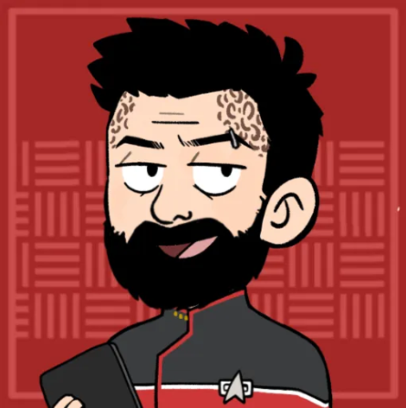

USS Hyperion
Description
Summary
Location:: The Shackleton Expanse
Portrait:: 
Note:: A Nova class science vessel with a mission to chart the Shackleton Expanse and be among the first Federation vessels to discover what lies within.
Traits
- Federation Starship
- Nova Class
- Dependable Workhorse
Namesake
The USS-Hyperion inherits it's name from a moon of Saturn.
Mission
The USS Hyperion is tasked with charting the Shackleton Expanse. It is one of just a few vessels to be the first discovering what lies in this unexplored region of space.
Mission Logs
Season 1
Season 2
- Hyperion Log 10.1 - New Life and New Civilizations:
Stardate 62314, Session: 15
The USS Hyperion responded to a distress signal in the Amaddon system but instead encountered a legendary Ha’kiv. The Ha'kiv were hunted down by Vinshari Maelstrom ships, which then attacked the Hyperion as well. After destroying two attackers, a Vinshari woman named Captain J’Lara. She revealed that the Vinshari exploited Ha’kiv for energy and asked for help rescuing the captured creature. - Hyperion Log 10.2 - The Needs of the Few:
Stardate 62317, Session: 16
The Hyperion hacked the Vinshari drone network to disguise itself, then turned the drones against Vinshari ships, plunging the system into chaos. Using the distraction, the crew infiltrated a barge descending into a gas giant to rescue the captured Ha’kiv. Inside, the away team triggered alarms and alerting the Vinshari to their presence. - Hyperion Log 10.3 - Ha'kiv Heist:
Stardate 62317, Session: 17
The Hyperion’s away team infiltrated a Vinshari barge to rescue a captured Ha’kiv, fighting through security. After a firefight, the waste section of the barge and the waverider with Verlath and J’Lara was jettisoned, and they nearly fell to their death. The away team on the barge deployed pattern enhancers and beamed the Ha’kiv into the planet’s atmosphere. They performed an emergency transport to escape with survivors before the freed Ha’kiv erupted in a brief supernova. - Hyperion Log 10.4 - Q:
Stardate 62317, Session: 18
- - Hyperion Log 11.1 - Abyss Station to do:
Stardate 62411, Session: 19
The Hyperion met up with Captain Akul at Omega Draconis and found a Tilikaal Station and a single planet orbiting a black hole. They split up into 2 teams: one would investigate the planet that had 300 lifesigns on it, and the other would infiltrate the Tilikaal station. On the planet, they found a death cult awaiting their "ascension" when the black hole destroyed the planet. Inside the station, they found non other than Commander Thal'vaek of the Romulan Empire. - Hyperion Log 11.2 - Of Gods and Men to do:
Stardate 62411, Session: 20
- - Hyperion Log 11.3 - Singularity to do:
Stardate 62411, Session: 21
- - Hyperion Log 11.4 - Flushed:
Stardate 63521, Session: 22
Sorketh, SILAR, Enat Tara, and Eric beamed onto the cloaked warbird and secured the bridge. Rhen Gorath then ordered Rega to open a wormhole at the Tilikaal station. Chaktir, Abyss Station, the warbird, and the Hyperion were all dragged through to an unfamiliar system with a blue sun and an ocean world. - Hyperion Log 12.1 - Capsized:
Stardate 63540, Session: 23
After securing control of a commandeered Romulan Warbird, the crew of the Hyperion decided to respond to a distress call on the water planet Seku-1. They crash-landed the Mupw’l into Seku’s ocean and then killed a sea serpent. They later boarded submersibles led by a vulcanoid woman named Noralith. They learned that she was a new species, and that the submersibles were powered by crystals. - Hyperion Log 12.2 - Atlantis:
Stardate 63557, Session: 24
An Akaru woman named Noralith led the team to an underwater city under a crystal-powered energy shield. The city was full of stranded castaways. The Hyperion created a drone-daisy-chain to transport most of the crew off-world, but left Rhen Gorath behind. Rega use Abyss Station to create a micro wormhole that rescued Gorath and all of the castaways. As the exodus snowballed, even Noralith chose to leave. - Hyperion Log 13.1 - Convoy SE-119:
Stardate 63585, Session: 25
The Hyperion returned to Narendra Station a year out of sync, offloaded rescued passengers and a captured Romulan warbird, and saw Captain Rhen Gorath given command of the new Luna-class USS Hyperion-A. Their first escort mission ended on a cliffhanger when Vinshari pirates ignored negotiations and harpooned one of the civilian freighters. - Hyperion Log 13.2 - Defending the Convoy:
Stardate 63585, Session: 26
The Hyperion-A fought back the Vinshari pirates and then helped them recover survivors. Before leaving, they took a detailed internal scan of the Vinshari ship. At the convoy's destination planet, they uncovered an old Borg facility with Ithik people assimilated and in vats of nanite jelly. - Hyperion Log 14.1 - The Face of Borg:
Stardate 63629, Session: 28
The Hyperion descended into the Borg facility, and bet the Face of Borg. It had a remarkable amount of independence, and apparently had been stranded there for thousands of years. It wanted help leaving the planet. It's small crew was all Ithik people. The Hyperion crew performed an empathy test, which The Face of Borg passed. - Hyperion Log 14.2 - Assimilation:
Stardate 63629, Session: 29
The crew researched the history of the Ithik, and learned from Thaccin and the borg ship that a Tilikaal woman named Ash-Tamalia had created the Ithik to be like lab rats in bio-engineering experiments. Afterwards, they attempted to liberate a borg drone, which was mostly successful, but the liberated Ithik screamed, alerting the Face of Borg.
Crew Members
Department Heads
| Role5 | Rank + " " + file.link + "" | " (" + pronouns + ") - " + Species | choice(Type = "Player Character", "" + Type + "", Type) | Portrait | " > " + Summary |
|---|---|---|---|---|---|
| Captain | Captain Rhen Gorath | (he/him) - Trill | Player Character |  | Looking to prove himself and gain the captain's trust, after having betrayed his ideals for a former superior officer. |
| Science Officer | Lt Commander SILAR | (he/him) - Hologram | Player Character | Among the first holographic persons to be commissioned as full starfleet officers. Designed by the Vulcan Science Academy. | |
| Chief Medical Officer | Lt Commander Jonathan Belaris | (he/him) - Denobulan, Vulcan | Player Character |  | Raised in London on Earth, but instilled with Denobulan and Vulcan values. |
| Tactical Officer | Lieutenant Sorketh | (they/them) - Liberated-Borg, Vulcan | Player Character |  | One of the first successfully liberated Borg after the return of Voyager. |
| Chief Engineer | Lieutenant Jarek Vossin | (He/Him) - Human | Player Character |  | A colonist with a penchant for machines, especially ones that go ZOOM. |
Command Division
| Role2 | Rank + " " + file.link + "" | "(" + pronouns + ") - " + Species | choice(Type = "Player Character", "" + Type + "", Type) | Portrait | "> " + Summary |
|---|---|---|---|---|---|
| Captain | Captain Rhen Gorath | (he/him) - Trill | Player Character | Looking to prove himself and gain the captain's trust, after having betrayed his ideals for a former superior officer. | |
| Flight Controller | Lieutenant Thaval th'Kerre | (he/him) - Andorian | Supporting Character |  | Assigned to the Hyperion after having his career saved by Rhen Gorath. |
Sciences Division
| Role4 | Rank + " " + file.link + "" | "(" + pronouns + ") - " + Species | choice(Type = "Player Character", "" + Type + "", Type) | Portrait | "> " + Summary |
|---|---|---|---|---|---|
| Science Officer | Lt Commander SILAR | (he/him) - Hologram | Player Character | Among the first holographic persons to be commissioned as full starfleet officers. Designed by the Vulcan Science Academy. | |
| Chief Medical Officer | Lt Commander Jonathan Belaris | (he/him) - Denobulan, Vulcan | Player Character | | Raised in London on Earth, but instilled with Denobulan and Vulcan values. |
| Ship Doctor | Lieutenant T'Lorr | (she/her) - Vulcan | Supporting Character |  | A thorough investigator of medicine whose always looking for her next problem to solve. |
| Subspace Specialist | Lieutenant Rega | (she/her) - Klingon | Supporting Character |  | Searching for glory in Starfleet, hoping it supports her passion for science in a way the Klingon Empire did not. |
Operations Division
| Role4 | Rank + " " + file.link + "" | "(" + pronouns + ") - " + Species | choice(Type = "Player Character", "" + Type + "", Type) | Portrait | "> " + Summary |
|---|---|---|---|---|---|
| Chief of Security | Lt Commander Enat Tara | (he/him) - Cardassian | Supporting Character | Among the first Cardassians in Starfleet, seeking to represent his people and earn Starfleet respect. | |
| Tactical Officer | Lieutenant Sorketh | (they/them) - Liberated-Borg, Vulcan | Player Character | | One of the first successfully liberated Borg after the return of Voyager. |
| Chief Engineer | Lieutenant Jarek Vossin | (He/Him) - Human | Player Character | | A colonist with a penchant for machines, especially ones that go ZOOM. |
| Security Specialist | Ensign Eric | (he/him) - Human | Supporting Character |  | New on the job and ready to blast some bad guys! |
Passengers
| " " + file.link + ""3 | "(" + pronouns + ") - " + Species | Faction | Portrait |
|---|---|---|---|
| Thaccin | (they/them) - Tilikaal |  | |
| Captain J'Lara | (she/her) - Vinshari |  | |
| Akkara | (he/him) - Ithik |
|  |
Ship Locations
Facilities
| File0 | "> " + Note |
|---|
Shuttles
The Hyperion is equipped with dozens of shuttles. Some notable ones are listed below!
| File0 | "> " + Note |
|---|